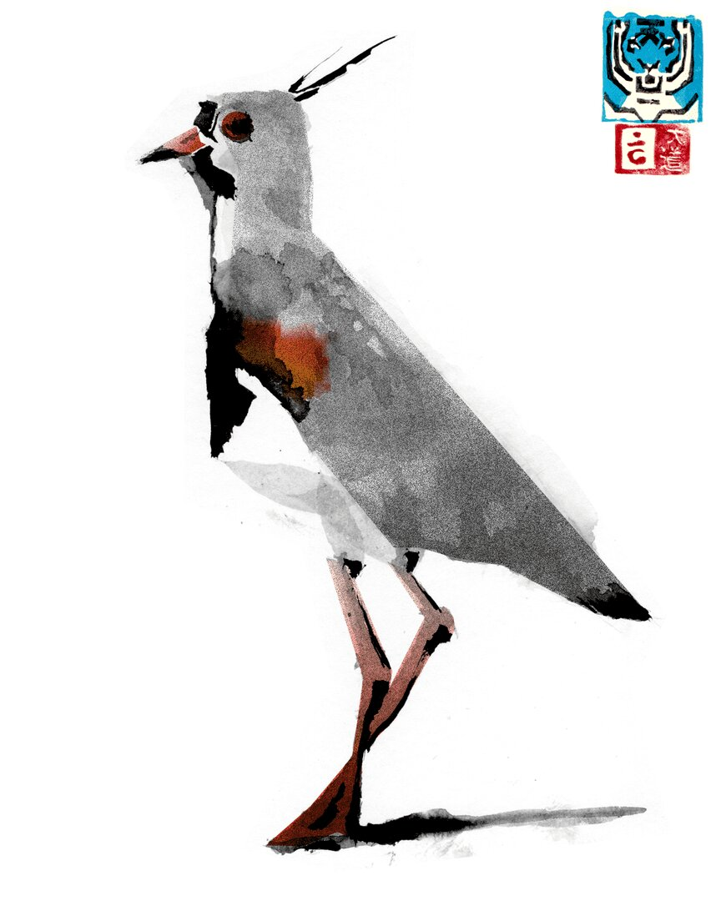
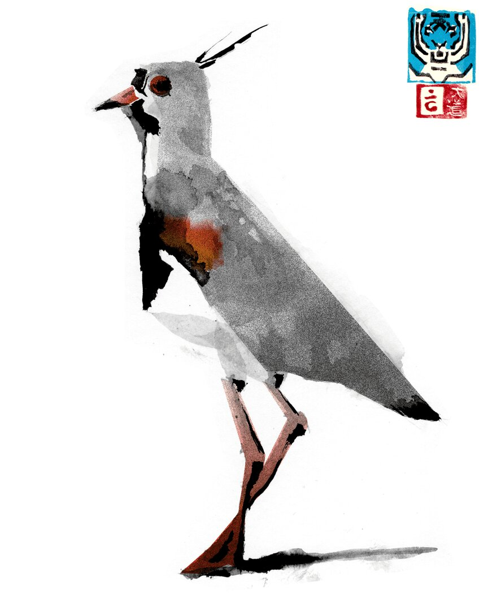
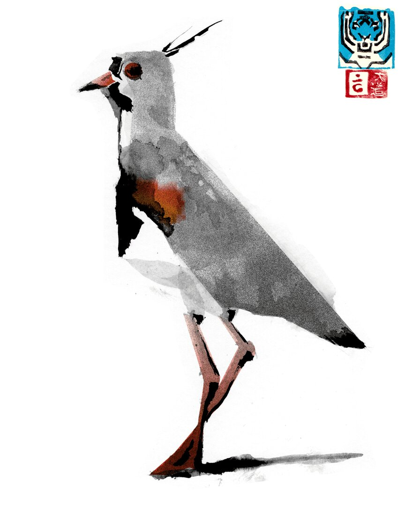

Tigre Maltés
IV Región, Coquimbo
Desarrollo del arte gráfico, inspirado en la estética del cartelismo y los cómics, para generar una narrativa visual propia.


 
IV Región, Coquimbo
Desarrollo del arte gráfico, inspirado en la estética del cartelismo y los cómics, para generar una narrativa visual propia.
